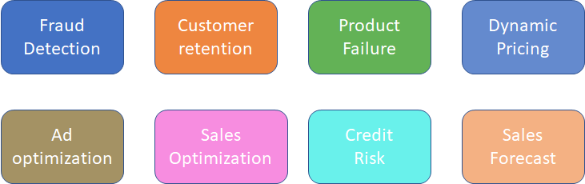
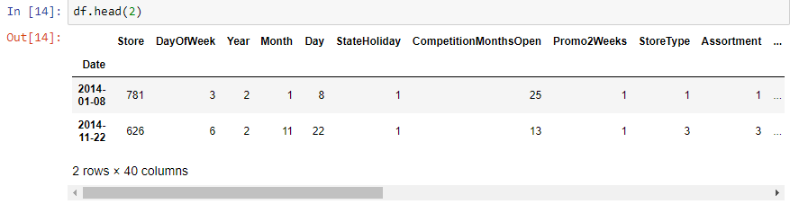
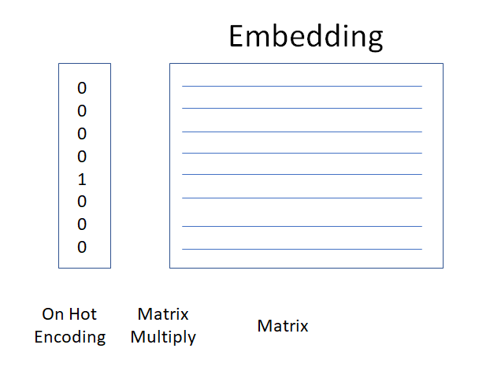

<!doctype html>
<html lang="en">
    <head>
        <meta charset="utf-8">
        <meta name="viewport" content="width=device-width, initial-scale=1.0, maximum-scale=1.0, user-scalable=no">

        <title>Tabular Data Predictions w. NN</title>
        <link rel="stylesheet" href="./css/reveal.css">
        <link rel="stylesheet" href="./css/theme/moon.css" id="theme">
        <link rel="stylesheet" href="./css/highlight/zenburn.css">
        <link rel="stylesheet" href="./css/print/paper.css" type="text/css" media="print">


    </head>
    <body>

        <div class="reveal">
            <div class="slides"><section  data-markdown><script type="text/template">
## Intro

Scott Mueller
smueller.tampa.ai@gmail.com

MomsSafetyNet.com</script></section><section  data-markdown><script type="text/template">## Tampa.ai

Looking for Presenters
</script></section><section  data-markdown><script type="text/template"># Tabular Data Predictions with Neural Nets</script></section><section  data-markdown><script type="text/template">* Why?
* Business Data
* Feature Engineering
* Using Fast.ai
* Concerns with Neural Nets
* Transfer Learning
</script></section><section  data-markdown><script type="text/template">## Why Neural Nets?

* Reduced Effort in Feature Engineering
> Pinterest: Hand created features unnecessary

> More accurate, less maintenance
</script></section><section  data-markdown><script type="text/template">* Can model arbitrary function
* Better at Generalizing for Unseen Situations
* Improve with Neural Net improvements</script></section><section  data-markdown><script type="text/template">## Business Data
* Tabular Data found in Most Businesses


Possible to Extract to Spreadsheet</script></section><section  data-markdown><script type="text/template">## Example Models
</script></section><section  data-markdown><script type="text/template">## Business Objective

* Optimizing Business Value</script></section><section  data-markdown><script type="text/template">## Denormalize Data

</script></section><section  data-markdown><script type="text/template">[X] => f(X) = [Y]

* Input Tensor
* Some function across the inputs
* Some prediction, single or array </script></section><section  data-markdown><script type="text/template">## Feature Engineering

* What is Important about our Input Data?
* Choice is Easier with Neural Net</script></section><section  data-markdown><script type="text/template">Continuous Values

[1.3, 2.1, 1.8, 2.5,...]</script></section><section  data-markdown><script type="text/template">## Categorical Data becomes Embedding Data

* Levels become continuous values

 [0.20, 0.82, 0.45, 0.67]
</script></section><section  data-markdown><script type="text/template">


[0.20, 0.82, 0.45, 0.67, 0.3, 0.28, 0.52]

Matrix values are learned when training model</script></section><section  data-markdown><script type="text/template">## Features which make it easier to train model

* Add features that help in your domain</script></section><section  data-markdown><script type="text/template">## Key Choices

Treat values as continuous or categorical

How big should each embedding matrix be?
> embedding per categorical

> auto-calc or specified</script></section><section  data-markdown><script type="text/template">## Fast.ai

Improvements in the library make working with Tabular data even easier

https://github.com/fastai/fastai
</script></section><section  data-markdown><script type="text/template">## Special Categorical
* Date
```python
add_datepart(weather, "Date", drop=False)
add_datepart(googletrend, "Date", drop=False)
```
DayOfWeek, Year, Month, Day, DayOfMonth, DayOfYear, Is_Month_End
</script></section><section  data-markdown><script type="text/template">## Step 1: Identifying Categorical vs Continuous

```python
  cat_vars = ['Store', 'DayOfWeek', 'Year', 'Month', 'Day', 'StateHoliday', 'CompetitionMonthsOpen',
    'Promo2Weeks', 'StoreType', 'Assortment', 'PromoInterval', 'CompetitionOpenSinceYear', 'Promo2SinceYear',
    'State', 'Week', 'Events', 'Promo_fw', 'Promo_bw', 'StateHoliday_fw', 'StateHoliday_bw',
    'SchoolHoliday_fw', 'SchoolHoliday_bw']

  contin_vars = ['CompetitionDistance', 'Max_TemperatureC', 'Mean_TemperatureC', 'Min_TemperatureC',
   'Max_Humidity', 'Mean_Humidity', 'Min_Humidity', 'Max_Wind_SpeedKm_h', 
   'Mean_Wind_SpeedKm_h', 'CloudCover', 'trend', 'trend_DE',
   'AfterStateHoliday', 'BeforeStateHoliday', 'Promo', 'SchoolHoliday']
   ```
</script></section><section  data-markdown><script type="text/template">## Example Models

https://colab.research.google.com/drive/15Bg4bQfuV1Nr2KRVxkVz-XbU5QwfeWUw#scrollTo=RHqVkRcWBKRB

https://colab.research.google.com/drive/1-4Q95kHW-gWGAly99vxugom5shuISErP
</script></section><section  data-markdown><script type="text/template">## Embeddings Are Reusable

* Improves Shallow Learning

Rossman paper showed that using the Embeddings from Neural Net
Improved the performance of the Gradient Boosting and Random
Forest implementations for the same problem
</script></section><section  data-markdown><script type="text/template">## Concerns

* Interpretation/Interpretability

* Performance</script></section><section  data-markdown><script type="text/template">## Feature Importance In Structure Data Networks
(http://parrt.cs.usfca.edu/doc/rf-importance/index.html)
> scikit and R feature importance is biased

> To get reliable results in Python, use permutation importance
</script></section><section  data-markdown><script type="text/template">
## Column Permutation
* Once model is trained, run the test set with one column randomly reordered

> Retains the distribution

> Impact of Loss represents importance
</script></section><section  data-markdown><script type="text/template">## Drop Column

* Train muliple other models without one column

* Difference in loss is the impact of column</script></section><section  data-markdown><script type="text/template">## Performance

* Ongoing research area
> Quantization, FP16, FP8, Distillation

* Hardware improvement to CPU systems</script></section><section  data-markdown><script type="text/template">## Transfer Learning


Remove icing on top, add domain specific layers</script></section><section  data-markdown><script type="text/template">## Image Transfer Learning

* Base/Stem Architecture
> ResNet

* Head Layers

Train with Frozen Layers, then Discriminitive Learning Rates</script></section><section  data-markdown><script type="text/template">## NLP

* ImageNet moment last year?
</script></section><section  data-markdown><script type="text/template">## NLP Base 

* Self-supervized Learning 

> we have labels, labels are not things that somebody else created

* ULMfit -> Language Model

> Predict the next word
</script></section><section  data-markdown><script type="text/template">## NLP Head

* Freeze base layers and Train on Target Task

* Optionally Unfreeze
</script></section><section  data-markdown><script type="text/template">## How does that apply to Tabular Data?

* Is predicting sales the business objective?

* Predict Sales

* Add layers train on Human annotated data</script></section><section  data-markdown><script type="text/template">
</script></section></div>
        </div>

        <script src="./lib/js/head.min.js"></script>
        <script src="./js/reveal.js"></script>

        <script>
            function extend() {
              var target = {};
              for (var i = 0; i < arguments.length; i++) {
                var source = arguments[i];
                for (var key in source) {
                  if (source.hasOwnProperty(key)) {
                    target[key] = source[key];
                  }
                }
              }
              return target;
            }

            // Optional libraries used to extend on reveal.js
            var deps = [
              { src: './lib/js/classList.js', condition: function() { return !document.body.classList; } },
              { src: './plugin/markdown/marked.js', condition: function() { return !!document.querySelector('[data-markdown]'); } },
              { src: './plugin/markdown/markdown.js', condition: function() { return !!document.querySelector('[data-markdown]'); } },
              { src: './plugin/highlight/highlight.js', async: true, callback: function() { hljs.initHighlightingOnLoad(); } },
              { src: './plugin/zoom-js/zoom.js', async: true },
              { src: './plugin/notes/notes.js', async: true },
              { src: './plugin/math/math.js', async: true }
            ];

            // default options to init reveal.js
            var defaultOptions = {
              controls: true,
              progress: true,
              history: true,
              center: true,
              transition: 'default', // none/fade/slide/convex/concave/zoom
              dependencies: deps
            };

            // options from URL query string
            var queryOptions = Reveal.getQueryHash() || {};

            var options = {"transition":"fade"};
            options = extend(defaultOptions, options, queryOptions);
        </script>


        <script>
          Reveal.initialize(options);
        </script>
    </body>
</html>
